리눅스마스터-1급 (2002-05-19 기출문제)
1과목: 리눅스 실무의 이해
1. 시스템의 성능을 나타내는 4가지 요소에 대한 설명으로 틀린 것은?
- Throughput : 다량의 데이터의 처리 시 내용을 세밀히 감시하는 능력을 나타낸다.
- Reliability : 시스템이 얼마나 정확하게 작동되는지를 나타낸다.
- Availability : 시스템의 사용이 요구되는 시간에 대해 실제로 사용이 가능한 시간의 비율을 나타낸다.
- Turnaround Time : 작업이 제출되어서 결과를 얻을 때까지의 총 소요 시간을 나타낸다.
(정답률: 56%)

2. 운영체제의 여러 가지 특징에 대한 설명으로 틀린 것은?
- 다중 태스킹(Multi-tasking) : 한 사용자가 여러 개의 작업을 동시에 수행하는 것을 말한다.
- 실시간 처리(Real Time Processing) : 작업을 지연 없이 즉각적으로 처리하는 것을 말한다.
- 대화형 처리(Interactive Processing) : 고속의 통신선과 고 신뢰도를 요구하는 것으로 마이크로 프로세서의 상호 사용이 필요하다.
- 병렬 계산(Parellel Processing) : 많은 프로세서들이 동시에 작동하는 것을 말한다.
(정답률: 52%)
3. 리눅스의 성공요인에 대한 설명으로 가장 적절하지 못한 것은?
- GNU정신에 입각한 소스코드의 공개
- 무료배포를 기본으로 한 공유와 나눔
- 관리 미숙으로 인해 시스템에 문제가 발생할 경우 이에 대한 완벽한 보상
- 기술의 폐쇄성을 무기로 하는 독점소프트웨어에 대한 반발심리
(정답률: 72%)
4. 운영체제(Operating System)에서 가장 핵심적인 역할인 자원(메모리, 프로세서등)을 관리하며 시스템이 원활히 돌아갈 수 있도록 제어해주는 것은?
- 응용프로그램(Application)
- 데몬(Demon)
- 쉘(Shell)
- 커널(Kernel)
(정답률: 66%)
5. 커널의 표시는 보통 kernel-2.4.16와 같이 하는데 이때 숫자 16이 의미하는 바로 알맞은 것은?
- 16번의 패치가 이루어 졌음을 나타낸다.
- 16번의 큰 변화가 있었음을 나타낸다.
- 16번의 테스트를 거친 안정버전을 나타낸다.
- 분기별로 맞추어진 16이라는 숫자를 나타낸다.
(정답률: 62%)
6. 다음 중 SCSI(Small Computer System Interface)에 관한 설명으로 틀린 것은?
- 컴퓨터와 주변기기를 연결하는 하드웨어 인터페이스를 말한다.
- 디바이스를 7개에서 15개까지 연결이 가능하다.
- 리눅스 시스템에서만 사용할 수 있는 인터페이스이다.
- SCSI 인터페이스는 버스마스터링 기법이
(정답률: 56%)
7. 아래 그림은 리눅스 시스템의 구조를 나타낸 것이다. (가), (나), (다), (라)에 알맞은 내용을 순서대로 답한 것을 고르시오.
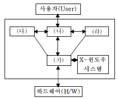
- 커널, 쉘, 유틸리티, 응용프로그램
- 쉘, 커널, 유틸리티, 응용프로그램
- 커널, 유틸리티, 응용프로그램, 쉘
- 쉘, 커널, 응용프로그램, 유틸리티
(정답률: 67%)
8. 다음 중 일반적인 리눅스의 디렉토리에 대한 설명으로 틀린 것은?
- / : 일반적으로 루트 디렉토리라고 부르는 가장 최상위 디렉토리
- /etc : 각종 환경 설정에 연관된 파일들과 디렉토리들을 가진 디렉토리
- /dev : 시스템의 각종 디바이스들에 접근하기 위한 디바이스 드라이버들이 저장되어 있는 디렉토리
- /var : 시스템의 각종 프로세서, 프로그램 정보 그리고 하드웨어적인 정보들이 저장되어 있는 디렉토리
(정답률: 68%)
9. 다음 중 X윈도우 시스템을 이루는 4가지 구성요소로서 가장 거리가 먼 것은?
- 서버/클라이언트
- xtoolkit
- xprotocol
- XF86Setup
(정답률: 50%)
10. 다음 중 KDE에 대한 설명으로 틀린 것은?
- the K Desktop Environment의 약자이다.
- 파일매니저, 윈도우 매니저, 헬프 시스템, configuration 시스템과 각종 어플리케이션 등의 집합체이다
- Qt 라이브러리를 이용하여 개발되었다.
- KDE가 실행되는 운영체제는 리눅스가 유일하다.
(정답률: 53%)
11. 아래 설명에 해당하는 것은 무엇인가?
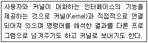
- Compiler
- Shell
- Debugger
- Interrupt
(정답률: 69%)
12. 환경변수는 사용하고자 하는 쉘의 환경을 작업환경에 맞게 설정하는데 사용되는 값들을 가지고 있다. 이러한 환경변수에 대한 설명으로 틀린 것은?
- DISPLAY : 현재 X 윈도우 Display 위치
- PS1 : prompt 설정값
- TERM : 종료 시 수행해야할 작업
- MANPATH : man 페이지 경로
(정답률: 43%)
13. 프로세스 상태와 그에 대한 설명으로 틀린 것은?
- 생성 상태 : 사용자가 요청한 작업이 커널에 등록되어 커널 공간에 PCB 등이 만들어지고 프로세스가 처음 생성되는 상태
- 준비 상태 : 프로세스가 기억장치를 할당받지 못하고 있는 상태로서 처음 생성되었을 당시에 그 프로세스를 위한 기억장치의 양이 충분하지 않은 상태
- 실행 상태 : 프로세스의 프로그램 코드가 기억장치로부터 읽혀지면서 프로세서에 의해 실행되고 있는 상태
- 대기 상태 : 프로세스가 임의의 자원을 요청한 후 이를 즉시 할당받을 수 없어 이를 할당받을 때까지 기다리고 있는 상태
(정답률: 64%)
14. 인터럽트의 일반적인 종류와 설명으로 틀린 것은?
- 입출력 인터럽트: 프로세스가 요청한 입출력의 완료 등과 관련하여 발생
- 클럭 인터럽트: 프로세스의 시간 할당량 종료와 관련하여 발생
- 프로세스간 통신 인터럽트: 실행중인 프로세스가 시스템 호출을 하였을 때 발생
- 프로그램 오류 인터럽트: 프로그램의 실행중 논리적인 오류로 인하여 발생
(정답률: 39%)
15. 아래의 글을 읽고 (가)와 (나)에 알맞은 내용을 순서대로 답한 것을 고르시오.
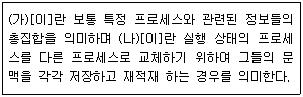
- 문맥(Context), 문맥 교환(Context Switching)
- 문맥 보존(Context Saving), 문맥 교환(Context Switching)
- 문맥(Context), 문맥 재적재(Context Restoring)
- 문맥 재적재(Context Restoring), 문맥 보존(Context Saving)
(정답률: 42%)
16. 네트워크상의 컴퓨터가 서로 통신할 수 있게 해주는 규약을 무엇이라고 하는가?
- 홉 (Hop)
- 라우팅(Routing)
- 토폴로지(Topology)
- 프로토콜(Protocol)
(정답률: 70%)
17. 다음 IP주소에 대한 설명으로 알맞지 않은 것은?
- 논리적인 네트워크의 규모에 따라 클래스를 부여한다.
- 네트워크ID 와 호스트ID 로 구성되어 있다.
- IP 주소가 203.201.88.3 이면 C 클래스에 속한다.
- 호스트ID 가 모두 0 이면 그 네트워크내의 모든 호스트를 목적지로 하는 방송(Broadcast)패킷이 된다.
(정답률: 65%)
18. 리눅스 설치 중 별도로 지정하지 않아도 되는 네트워크 설정항목은?
- Port Number
- DNS
- IP Address
- Gateway
(정답률: 55%)
19. 네트워크 인터페이스를 설정할 때 사용하는 명령어는?
- loopback
- route
- ifconfig
- netstat
(정답률: 56%)
20. 리눅스 시스템에서 서비스 포트가 설정된 파일은?
- /etc/inetd.conf
- /etc/services
- /etc/hosts
- /etc/network
(정답률: 62%)
2과목: 리눅스 시스템 관리
21. 다음 중 /etc/shadow 파일에 포함된 정보가 아닌 것은 ?
- 사용자 ID
- 암호화된 패스워드
- 패스워드 변경시기까지 남은 날 수
- UID 와 GID
(정답률: 45%)
22. 다음 중 틀린 설명은?
- adduser 명령어는 root 권한으로 실행이 가능하지만 useradd 명령어는 일반 사용자 권한으로도 사용이 가능하다.
- useradd -d /home/cray cray 명령어 실행을 통해 홈 디렉토리지정이 가능하다.
- useradd -f -5 cray 명령어 실행을 통해 앞으로 5일간 사용이 가능한 계정을 만들수 있다.
- useradd -g 5⑤ cray 명령어 실행을 통해 Group ID를 5⑤로 지정할 수 있다.
(정답률: 43%)
23. 다음 중 usermod 명령어에 대한 설명으로 틀린 것은 ?
- 로그인한 사용자의 정보도 변경이 가능하다.
- 사용자의 계정정보을 수정하는 명령어이다.
- 관련 파일로는 /etc/passwd, /etc/shadow, /etc/group 등이 있다.
- usermod -e 11/25/02 cray 명령어를 실행하면 11월 25일 이후로는 계정의 사용을 금지시킨다.
(정답률: 40%)
24. useradd 명령을 이용하여 일반 사용자들을 추가할 때 사용자의 환경파일을 가져오는 곳으로 가장 알맞은 것은?
- /etc/init.d
- /etc/skel
- /etc/shadow
- /etc/passwd
(정답률: 45%)
25. 다음 중 사용자계정 관련 설명으로 적절하지 못한 것은?
- /etc/shadow 파일을 고려하지 않는다면 /etc/passwd 파일의 두 번째 필드에 * 표시를 했을 때 사용자의 로그인이 제한된다.
- useradd 명령어에 -d 옵션을 이용하여 새로 만들어질 계정의 홈디렉토리 위치를 지정할 수 있다.
- /etc/passwd 파일에는 사용자의 로그인 쉘(Shell)에 대한 정보가 포함되어 있다.
- 현재 사용자의 계정이 arga일 때 su beta 명령을 실행하면 beta 계정으로 사용자 계정과 환경이 동시에 바뀐다.
(정답률: 34%)
26. 아래 파일에 대한 설명으로 틀린 것은?
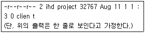
- 파일명은 client 이며 사이즈는 32767 이다.
- client 파일에 대해 소유자, 그룹, 타인 모두 읽기 권한만을 가진다.
- client 파일은 최초 생성일자가 8월 11일 11시30분이다.
- client 파일의 소유자는 ihd 이며, 소유자가 속한 그룹은 project 이다.
(정답률: 48%)
27. umask 값이 002로 설정되어 있을 때 새로 생성된 파일의 허가권은?
- -rw-rw-r--
- -r--rw-r--
- -r--r--r--
- -rwxrwxr-x
(정답률: 30%)
28. 괄호 안에 알맞은 옵션은?
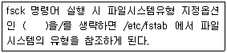
- -f
- -F
- -t
- -T
(정답률: 39%)
29. 다음 중 ln 명령어에 대한 설명으로 적절하지 않은 것은?
- 하드링크는 서로 다른 inode를 가지지만 원본과 동일한 형태이다.
- 심볼릭링크는 원본파일이 삭제되더라도 제거되지 않는다.
- 하드링크는 원본과 동일한 형태이지만 다른 이름으로 존재한다.
- 심볼릭링크는 원본파일을 가리키는 파일이기 때문에 원본파일에 비해 파일크기가 작고 하드링크파일은 원본파일과 같은 크기이다.
(정답률: 19%)
30. EXT3 파일시스템에서 데이터를 디스크에 쓰기 전에 로그를 남겨 시스템의 비정상적인 종료 시에도 로그를 이용해 빠르고 안정적인 복구를 할 수 있는 기술은?
- 슈퍼블록 기술
- 저널링 기술
- 클러스터링 기술
- 파이프라이닝 기술
(정답률: 47%)
31. 실행레벨(Runlevel)은 부팅과 셧다운 되는 동안 어떤 데몬과 서비스들이 시작될 지를 결정한다. 다음 중 실행레벨에 대한 설명으로 틀린 것은?
- Runlevel 0 : 모든 프로세스들을 종료하고, 파일 시스템을 언마운트 시킨다.
- Runlevel 1 : 단일 사용자 모드로 보통 시스템 관리자가 시스템에 특정 설정을 할 때 사용한다.
- Runlevel 2 : 다중 사용자 모드로 대부분의 배포판에서 기본적인 실행레벨로 사용한다.
- Runlevel 5 : 몇몇 배포판에서 그래픽 로그인 프롬프트를 띄우는 용도로 사용된다.
(정답률: 43%)
32. ps명령어의 옵션에 대한 설명으로 틀린 것은?
- a : 전체 사용자의 모든 프로세스를 출력
- u : 사용자의 이름과 프로세스 시작 시간 등을 출력
- x : 제어 터미널을 갖고 있지 않은 프로세스를 출력
- e : 결과를 Wide Format으로 출력
(정답률: 35%)
33. 다음 중 프로세스 관리 명령어들에 대한 설명으로 적절하지 못한 것은?
- kill 명령어는 해당 프로세스에게 시그널(Signal)을 보내주는 명령어이다.
- 슈퍼유저뿐만 아니라 일반유저도 nice 유틸리티를 사용해 프로세스의 우선순위를 높일 수 있다.
- vmstat 유틸리티는 프로세스, 메모리, I/O, CPU에 관한 정보를 보여주는 프로그램이다.
- top -q 명령은 프로세스 상황을 지연시간 없이 갱신하여 출력한다.
(정답률: 43%)
34. 프로세스는 종료되었으나 종료 코드를 반환하지 않은 상태는?
- waiting
- sleeping
- blocking
- zombie
(정답률: 56%)
35. 시스템 관리 명령어인 killall 명령의 옵션에 대한 설명으로 옳지 못한 것은?
- -i : 명령실행 전 확인을 위해 상호적으로 물어본다.
- -v : 시그널이 성공적으로 보내졌다면 보고한다.
- -V : 버전 정보를 출력한다.
- -w : 알려진 모든 시그널 이름 목록을 보여준다.
(정답률: 41%)
36. rpm 패키지 설치 시 의존성(Dependency)에 상관없이 강제로 설치하게 하는 옵션은?
- --nodeps
- --noorder
- --notriggers
- --noscripts
(정답률: 54%)
37. 리눅스에서 압축을 하거나 풀 경우 많이 사용되는 gzip 명령어의 옵션에 대한 설명으로 옳지 못한 것은?
- -d : 압축을 푼다.
- -r : 현재 디렉토리의 하위 디렉토리까지 전부를 압축한다.
- -t : 현재 압축된 파일의 내용을 보여준다.
- -9 : 최대한 압축한다.
(정답률: 26%)
38. 다음 중 tar 명령어의 옵션에 대한 설명으로 옳지 못한 것은?
- -c : 새로운 아카이브 파일을 작성한다.
- -t : 묶음 파일의 내용을 보여준다.
- -r : 묶음 파일에 새로운 파일을 추가한다.
- -f : 묶음 파일을 해제한다.
(정답률: 46%)
39. 인터넷을 통하여 sample.tar.gz와 같은 파일을 다운받았다. 이와 같은 형식의 파일을 만드는 방법으로 가장 올바른 것은?
- sample파일을 gzip명령으로 압축을 한다.
- sample파일을 tar명령으로 묶는다.
- sample파일을 gzip명령으로 묶은 후, tar명령으로 압축한다.
- sample파일을 tar명령으로 묶은 후, gzip명령으로 압축한다.
(정답률: 58%)
40. 데비안 패키지 관리 유틸리티인 dpkg의 특징으로 적절하지 않은 것은?
- 의존성 체크기능이 우수하다.
- 사용 가능한 패키지들의 목록 갱신기능을 제공한다.
- 자동 설치가 가능한 실행 프로그램 작성기능을 제공한다.
- 시스템에서 제거된 패키지 목록들을 알려준다.
(정답률: 39%)
41. 리눅스 커널을 설정하기 위한 명령어에는 여러 가지가 있다. 다음 중 리눅스 커널을 설정하기 위한 명령어가 아닌 것은 무엇인가?
- make xconfig
- make config
- make menuconfigurator
- make menuconfig
(정답률: 48%)
42. 현재 실행중인 커널에 모듈을 삽입하는 명령어는 무엇인가?
- insmod
- addmod
- insertmod
- exmod
(정답률: 45%)
43. 리눅스 커널에 대한 설명으로 옳지 못한 것은?
- 안정버전과 개발버전으로 나뉘어 진다.
- 단일(Monolithic) 커널이다.
- 커널버전이 2.3.×와 같은 것은 안정버전이다.
- 대부분 C언어로 작성 되었다.
(정답률: 41%)
44. 다음 중 리눅스의 모듈에 대한 설명으로 가장 적절하지 못한 것은?
- 모듈을 커널에서 제거할 때는 rmmod 명령을 사용한다.
- 모듈은 반드시 새로운 커널 코드를 다시 컴파일 한 후 커널을 재부팅하고 나서 테스트해야 한다.
- 새 모듈이 커널에 추가되면, 커널의 심볼 목록을 갱신하고 새 모듈이 사용하는 모듈들을 수정해야 한다.
- lsmod 명령은 단지 커널 모듈 자료 구조의 리스트로부터 만들어지는 /proc/modules의 포맷을 바꾸어서 보여주는 것이다.
(정답률: 26%)
45. DMA 채널에 관한 설명으로 틀린 것은?
- 디바이스로부터 메모리로 직접 바이트 열을 전송한다.
- 인터럽트와 같이 DMA 요구에는 번호가 붙여져 있다.
- DMA 채널은 보통 PCI버스에서 사용한다.
- Direct Memory Access의 약어이다.
(정답률: 43%)
46. 리눅스 시스템에서 디스크의 마운트 정보를 변경할 때 사용되는 설정 파일은 무엇인가?
- /etc/fstab
- /etc/mnt
- /etc/partition
- /etc/config
(정답률: 45%)
47. 다음 중 프린터에 진행 중인 작업 내용을 삭제할 때 사용되는 명령어는?
- lpdel
- delpr
- rmlp
- lprm
(정답률: 43%)
48. 리눅스 시스템에서 제공되는 프린터 설치 유형이 아닌 것은?
- Unix Printer
- Novell Printer
- Indirect Printer
- Local Printer
(정답률: 23%)
49. 리눅스 시스템에서 모듈화된 커널 사운드 드라이버를 이용하여 사운드 카드를 설정할 때 사용되는 명령어인 sndconfig가 참조하는 파일로 알맞은 것은?
- /etc/modules.conf
- /etc/modules.cfg
- /etc/config.modules
- /etc/modules.config
(정답률: 44%)
50. 플로피 디스크를 리눅스 파일 시스템으로 만드는 명령어는?
- mkfs -t ext2 /dev/fd0
- mkfs -t ntfs /dev/fd0
- mkfs -t vfat /dev/fd0
- mkfs -t msdos /dev/fd0
(정답률: 50%)
51. 다음 중 시스템로그에 대한 설명으로 적절하지 못한 것은?
- 시스템에서 어떤 일들이 발생하는지를 알려준다.
- 로그파일은 데몬에 의해서 남겨진다.
- 로그데몬은 어떠한 경우에도 종료시킬 수 없다.
- 경우에 따라 디스크 공간을 차지하는 비율이 클 수 있다.
(정답률: 54%)
52. 로그파일 관리도구인 logrotate의 기능에 대한 설명으로 틀린 것은?
- 지정한 양이나 기간이 지나면 다른 파일로 대체한다.
- 지정한 용량만큼 찼을 때 다른 파일로 대체한다.
- 작업 시 에러가 발생하면 지정한 주소로 메일을 보낸다.
- 로그파일은 압축되거나 변형되지 않는다.
(정답률: 45%)
53. 언제, 누가, 어디에서, 어떻게 접속을 했는가에 대한 로그를 기록하고 있으며, 시스템에 불법 침입이 있었다고 의심이 될 때 반드시 확인해 봐야 할 로그파일로 가장 알맞은 것은?
- /var/log/messages
- /var/log/secure
- /var/log/boot.log
- /usr/local/apache/logs/aeecss_log
(정답률: 38%)
54. 웹사이트의 로그분석에 사용되는 Access Log(/usr/local/apache/logs/access_log) 파일에서 문서가 정상적으로 호출되었는지에 대한 상황을 알려주는 Status code 필드의 값과 의미가 바르게 짝지어진 것은?
- 1 - Continue / Protocol Change
- 2 - Redirection
- 3 - Server Error
- 4 - Success
(정답률: 27%)
55. 일반적으로 /var/log에 저장되는 로그 파일중 wtmp 파일은 해당 시스템 계정들의 로그인과 로그아웃 히스토리 정보 등을 가지고 있다. 이 파일의 내용을 확인하기 위하여 수행해야 할 명령어로 가장 적절한 것은?
- cat /var/log/wtmp
- last
- less /var/log/wtmp
- lastlog
(정답률: 31%)
56. 일반적인 리눅스 로그파일과 그 기능에 대한 설명으로 적절하지 못한 것은?
- messages : 리눅스 커널로그 및 주된 로그
- boot.log : 시스템 부팅시의 로그
- lastlog : 각 사용자의 가장 최근 로그인한 시간 로그
- xferlog : X-Windows 와 관련한 주요한 로그
(정답률: 38%)
57. 시스템 무결성 검사도구로서 사용되는 tripwire에 대한 설명으로 가장 적절하지 못한 것은?
- 시스템에 존재하는 파일들에 대해 데이터베이스를 만들고 새로 생성된 데이터베이스와 비교하여 추가, 삭제 또는 변조된 파일이 있는지 점검한다.
- 두 호스트간의 통신 암호화와 사용자 인증을 위해 비대칭키 암호기법을 사용한다.
- MD5, SHA 등의 다양한 해시함수를 제공한다.
- 파일들에 대한 데이터베이스를 만들어 불법적인 외부 침입자에 의한 파일 변조여 부를 판별할 수 있다.
(정답률: 52%)
58. 시스템 백업의 요령으로 가장 적절하지 못한 것은?
- 자료 가치에 따라 다른 백업 전략을 취한다.
- 신속한 복구를 위해 백업 테이프는 가급적 컴퓨터와 가까운 거리에 둔다.
- 중요한 백업자료는 암호화를 해둔다.
- 백업을 한 후에는 백업 테이프에 쓰기 방지를 해둔다.
(정답률: 50%)
59. 백업 프로그램인 dump에 대한 설명으로 틀린 것은?
- 여러 개의 테이프에도 백업할 수 있다.
- 파일에 대한 접근 권한, 소유주 등의 사항도 복구될 수 있다.
- 파티션 된 각 섹션마다 덤프를 실행해야 한다.
- NFS파일 시스템도 dump 할 수 있다.
(정답률: 29%)
60. 백업을 수행해야 할 대상과 그 설명으로 적절치 못한 것은?
- 사용자 홈디렉토리가 위치한 곳, 예를 들어 /home은 사용자의 개인 파일들이 다수 보관되어 있으므로 백업해 두는 것이 좋다.
- 각종 설정파일, 예를 들어 /etc 와 같은 곳은 복구 시 다시 설정하더라도 일단 백업해두는 것이 좋다
- 주로 로그파일이나 스풀 디렉토리가 위치한 /var와 같은 곳은 판단에 따라 백업하지 않아도 된다.
- 시스템의 상태정보를 가지고 있는 /proc과 같은 곳은 중요한 정보이므로 필수적으로 백업해두어야 한다.
(정답률: 39%)
3과목: 네트워크 및 서비스의 활용
61. 다음은 간략한 가상 호스팅에 대한 아파치웹 서버 설정파일의 내용이다. 설정에 대한 설명으로 가장 적절한 것은?
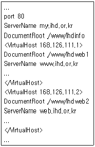
- 각각의 가상서버들에 웹을 통해 접근할 수 있는 포트번호를 각기 다르게 개별적으로 설정했음을 알 수 있다
- 만일 본 설정이 되어 있는 웹 서버의 로컬에서 웹브라우저를 통해 http://localhost를 쳤을 때에는 /www/ihdinfo 디렉토리안에 저장된 메인 서버 페이지에 접근하게 된다.
- IP주소 168.126.111.2 에 해당하는 웹 서버의 URL 주소는 www.ihd.or.kr 이다.
- 사용자가 www.ihd.or.kr, web.ihd.or.kr, my.ihd.or.kr의 어느 주소로 웹 접근을 하더라도 같은 페이지를 나타내도록 설정했음을 알 수 있다.
(정답률: 36%)
62. 시스템관리자 홍길동은 아파치와 php4가 설치된 시스템에서 php4로 작성된 home.php 파일을 브라우저를 통해 불러 왔을 때, 올바른 웹페이지가 나타나지 않고 php소스가 그대로 출력되어 고민하고 있다. 이에 대한 조치로서 가장 적절한 것은?
- 아파치 설정파일에 DirectoryIndex home.php를 설정한다.
- 아파치 설정파일에 AccessFileName home.php를 설정한다.
- php.ini 파일에서 engine = off를 설정한다.
- 아파치 설정파일에 AddType application/x-httpd-php.php를 설정한다.
(정답률: 28%)
63. 아파치 웹 서버의 환경설정에서 아래에 설명한 DNS 역검색 기능을 사용하지 않도록 하는 설정은?
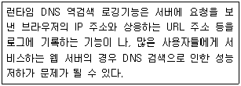
- DNS off
- IPNameLookups Off
- HostnameLookups Off
- DNSLogging Off
(정답률: 34%)
64. 웹브라우저를 통하여 http://www.ihd.or.kr/~hong 이라는 주소로 접근 시 www.ihd.or.kr 서버의 hong 사용자 홈디렉토리 아래 pulbic_html 디렉토리를 이용하여 개인 홈페이지 서비스를 하고자 할 경우 필요한 아파치 웹 서버의 환경 설정은?
- UserDir
- HomeDir
- HomeDirectory
- UserDirectory
(정답률: 36%)
65. 아파치 웹 서버의 환경 설정에 대한 설명으로 가장 적절하지 않은 것은?
- 웹 서버를 운영하는 형태로 수퍼 데몬에 의해서 관리하는 방식과, 독립형으로 실행하는 방식이 있다.
- 보안 또는 프록시 서버를 이용하는 경우는 21번 포트를 사용한다.
- KeepAlive 지시자를 이용하여 지속적인 접속, 즉 한번 연결에 대하여 한번 이상의 요청을 허용할 것인지 여부를 결정할 수 있다.
- StartServers 지시자를 이용하여 처음 웹 서버가 시작할 때 실행될 서버의 개수를 지정할 수 있다.
(정답률: 46%)
66. 아파치 웹 서버의 환경 설정에서 서버의 설정, 에러, 로그파일 등이 기록되는 서버 루트 디렉토리의 기본경로를 지정해 주는 설정은?
- DocumentRoot "/usr/local/apache/htdocs"
- ServerRoot "/usr/local/apache"
- PidFile /usr/local/apache/logs/httpd.pid
- ScoreBoardFile /usr/local/apache/logs/httpd.scoreboard
(정답률: 47%)
67. 아파치 웹 서버는 DSO(Dynamic Shared Object)방식을 지원하여 좀더 유연한 웹 서버를 구성 할 수 있게 해준다. 다음 DSO 방식의 단점으로서 가장 적절하지 못한 것은?
- DSO 매커니즘은 프로그램 코드를 알맞은 주소공간에 동적으로 적재시킬 수 있는 기능을 지원하지 않는 특정 운영체제에서는 사용 할 수 없다.
- DSO 방식을 사용하지 않은 것과 비교해서 일반적으로 웹 서버를 구동하는 데에 필요한 시간이 좀 더 많이 필요하다.
- 웹 서버를 운용하는 데에 있어서 DSO 방식을 사용하지 않는 것과 비교하여 일반적으로 성능이 떨어진다고 알려져 있다.
- 웹 서버에 DSO 모듈들을 적재시켜야 하므로, 다른 모듈이 추가적으로 필요할 경우 웹 서버 전체를 다시 컴파일 하여야 하는 단점이 존재한다.
(정답률: 29%)
68. 시스템 관리자 홍길동은 /usr/local/apache에 아파치 웹 서버를 컴파일 하여 설치한 후 임시로 /home/hong/test.conf에 웹 서버 설정을 하여 테스트해 보고자 한다. 이를 위해 수행해야 할 명령어로 가장 알맞은 것은?(단, 각각의 명령어는 한 줄로 이어서 실행 한다고 가정한다.)
- /usr/local/apache/bin/apachectl start
- /usr/local/apache/bin/httpd -f /home/hong/test.conf -t
- /usr/local/apache/bin/httpd --file /home/hong/test.conf
- /usr/local/apache/bin/httpd -d /home/hong/test.conf
(정답률: 32%)
69. 다음 CGI에 대한 설명으로 가장 적절하지 않은 것은?
- 웹 서버 확장의 하나로 외부의 프로그램을 실행시켜 그 결과를 HTML로 돌려주는 방식으로서 Common Gateway Interface의 약자이다.
- 어떤 언어를 사용해도 무관하며 CGI 프로토콜의 단순성으로 사용하기가 비교적 간단하다.
- 여러 개의 CGI 프로그램을 계속해서 동작시키면 프로세스가 많이 생성되므로 메모리자원의 부족을 초래할 수도 있다.
- HTML로 작성된 고정 콘텐츠를 좀더 빠른 속도로 제공할 수 있다는 데에 그 이점이 있다.
(정답률: 28%)
70. 다음 중 proftpd에 대한 설명으로 틀린 것은?
- 단일 환경 설정 파일을 제공한다.
- standalone형태 혹은 inetd형태로 동작할 수 있다.
- wu-ftpd 서버와 달리 anonymous FTP의 루트 디렉토리에 특정한 디렉토리 구조와 시스템 바이너리 등의 파일이 필요하다.
- 보안에 취약한 SITE EXEC 명령이 없다.
(정답률: 24%)
71. proftpd 설정 파일인 proftpd.conf에서 MaxInstances 라는 지시자가 사용되는 용도는?
- inetd 모드로 실행할 때 생성되는 최대 프로세스 수 설정
- standalone 모드로 실행할 때 생성되는 최대 자식 프로세스 수 설정
- 서버에 접속할 수 있는 최대 클라이언트 수 설정
- 서버에 전송할 수 있는 최대 대역폭의 크기 설정
(정답률: 19%)
72. proftpd를 운영하고 있는 서버에 일반 사용자 계정으로는 로그인이 가능하지만, anonymous 로는 로그인이 안된다. 이에 대한 이유로 적절하지 않는 것은?
- 설정 파일 안에 <Anonymous> ... </Anonymous> 지시자가 없다.
- RequireValidShell 지시자의 값이 Off이다.
- /etc/passwd 파일에 ftp 사용자에 대한 설정이 없다.
- ftp 사용자의 홈디렉토리에 대한 소유자나 권한이 잘못 설정되어 있다.
(정답률: 23%)
73. NFS설정파일인 /etc/exports 파일에서 /pub 디렉토리를 사용자 인증 없이 접근이 가능하게 하고, 읽기로만 마운트하게 하는 설정은 무엇인가?
- /pub (ro,no_root_squash)
- /pub (ro,all_squash)
- /pub (ro,insecure)
- /pub (ro,non_secure)
(정답률: 21%)
74. 다음은 NFS설정파일인 /etc/exports 파일의 내용이다. 이에 대한 설명으로 적절하지 않은 것은?
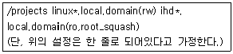
- ihd*.local.domain에서 /projects 디렉토리를 마운트하면 root에 대해서만 읽기가 가능하다.
- linux1.local.domain에서는 /projects 디렉토리를 읽고 쓰기가 가능하게 마운트할 수 있다.
- ihd*.local.domain은 ihd1.local.domain, ihd2.local.domain 등의 호스트를 포함 한다 .
- slave.local.domain은 /projects 디렉토리를 마운트 할 수 없다.
(정답률: 25%)
75. NFS 클라이언트에서 NFS 서버(nfs.ihd.or.kr)의 /projects 디렉토리를 마운트하기 위해 /etc/fstab 파일에 다음의 내용을 넣었다. 이에 대한 설명으로 적절하지 않은 것은?
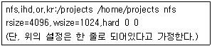
- 서버의 /projects 디렉토리를 클라이언트의 /home/projects 디렉토리로 마운트하는 명령이다.
- /projects 디렉토리가 마운트되지 않더라도 강제로 마운트하게 한다.
- 서버로부터 읽어들일 때에는 4096바이트, 서버에 저장할 때에는 1024바이트 단위로 한다.
- 타임아웃이 발생되면 “server not responding" 메시지를 출력하고 무한정 재시도 한다.
(정답률: 28%)
76. samba 설정 파일인 smb.conf의 [homes] 섹션에 대한 설명으로 적절하지 않은 것은?
- 사용자의 홈디렉토리를 나타낸다.
- homes 라는 공유디렉토리로 나타난다.
- 사용자 매칭을 위해 smbusers 파일을 사용하기도 한다.
- browseable = No로 지정하여 윈도우의 탐색기에 보이지 않게 설정할 수 있다.
(정답률: 26%)
77. samba 설정 파일의 내용 중 아래와 같은 섹션에 대한 설명으로 옳지 못한 것은?
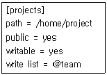
- projects 라는 공유 디렉토리에 접근하면 서버의 /home/project의 목록이 보인다.
- projects 라는 공유 디렉토리는 탐색기 상에서 검색할 수 있다.
- projects 라는 공유 디렉토리는 team 그룹내의 사용자만 쓰기가 가능하다.
- team 그룹을 지정하기 위하여 team group= kim, lee와 같은 지시자를 사용한다.
(정답률: 26%)
78. samba 설정 파일인 smb.conf의 [global] 섹션에 사용하는 지시자에 대한 설명으로 적절하지 않은 것은 무엇인가?
- workgroup 지시자는 원도우의 작업 그룹이나 도메인을 지정할 때 사용한다.
- hosts allow 지시자를 이용하여 접근을 제어할 수 있다.
- encrypted passwords 지시자에 yes라고 값을 지정하면 패스워드를 암호화한다.
- client code page에 한국어 설정을 하려면 437이라는 값을 입력하면 된다.
(정답률: 42%)
79. 다음 중 SMTP의 특징에 대한 설명으로 알맞지 않은 것은?
- TCP/IP의 하위층 네트워크 프로토콜의 하나이다.
- RFC 923에 규정되어 있다.
- 인터넷에서 전자 우편 기능을 전송하기 위한 프로토콜로 사용된다.
- 리눅스에서 SMTP기반의 메일 전송 프로그램으로 가장 널리 알려진 것은 Exchange server이다.
(정답률: 28%)
80. Sendmail에 대한 설명으로 적절하지 못한 것은?
- 인터넷에서 전자우편을 전송하기 위해 사용되는 프로그램이다.
- MTA(Mail Transfer Agent)라고 부른다.
- MUA(Mail User Agent)라고도 부른다.
- SMTP 기반이다.
(정답률: 41%)
81. 메일 서비스를 위한 기본적인 세 가지 컴포넌트 중 한 호스트로부터 메일을 받아 다른 호스트로 메일을 전달하는 역할을 하는 것은?
- 메일 전달 에이전트(MDA: Mail Delivery Agent)
- 메일 사용자 에이전트(MUA: Mail User Agent)
- 메일 전송 에이전트(MTA: Mail Transfer Agent)
- 메일 회신 에이전트(MRA: Mail Reply Agent)
(정답률: 30%)
82. Sendmail은 메일을 보내고 받을 때마다 sendmail.cf 파일을 읽고 여기에 명시된 규칙대로 실행을 한다. 따라서 sendmail.cf 파일은 빨리 읽어 해석 할 수 있도록 일정한 규칙을 가지고 작성되어 있다. 다음 중 이러한 규칙에 해당하지 않는 것은?
- 줄 단위로 실행된다.
- 줄은 공백으로 시작할 수 있다.
- 줄의 시작이 탭(Tab) 문자로 시작하면 윗줄의 연속이다
- config 명령은 매개 변수로 실행된다.
(정답률: 26%)
83. Sendmail에서 사용되는 설정 파일이 아닌 것은?
- sendmail.cf
- aliases.db
- sendmail.conf
- aliases
(정답률: 13%)
84. 다음 중 전자우편 관련 프로토콜인 POP3(Post Office Protocol 3)의 설명으로 틀린 것은?
- 인터넷 서버가 사용자를 위해 전자우편을 수신하고 그 내용을 보관하기 위해 사용되는 클라이언트/서버 프로토콜이다.
- 전자우편을 수신하기 위한 표준 프로토콜이다.
- 로컬서버에서 전자우편을 액세스하기 위한 표준 프로토콜이며 원격지 파일서버이다.
- POP3(Post Office Protocol 3)의 대안으로 사용할 수 있는 프로토콜은 IMAP이다.
(정답률: 35%)
85. 메일 서비스에서 사용되는 Virtual Host 기능에 대한 설명으로 틀린 것은?
- 서로 다른 호스트이름과 동일한 사용자 ID로 전송되는 메일을 각기 다른 사용자에게 전송할 때 사용되는 기능이다.
- 다수의 사용자를 매핑 하고자 할 경우 수신될 ID를 /etc/aliases 파일에 등록하고 등록된 ID를 수신자 ID로 설정하면 된다.
- config 파일의 FEATURE 매크로 중 virtusertable은 전송되어진 메일을 해당 사용자와 연결을 시켜주는 Rule set을 생성한다.
- config 파일의 FEATURE 매크로 중 forwardmaptable은 전송되는 메일에 대해서 사용자의 메일 주소와 연결 시켜주는 Ruleset을 생성한다.
(정답률: 28%)
86. 스팸메일(SpamMail)로부터 센드메일(SendMail)을 보호하기 위한 /etc/mail/access 파일의 메일 릴레이 기능에 대한 설정 중 행동양식에 대한 설명으로 틀린 것은?
- Relay - 지정된 도메인에서 들어오는 메일의 중계 허용
- Reject - 지정된 도메인에서 들어오는 메일을 거부메시지 없이 폐기
- 501 - 지정된 메일 주소와 일치하는 메일 수신 거부
- 550 - 지정된 도메인과 관련된 모든 메일 수신 거부
(정답률: 28%)
87. 메일링 리스트 매니저(MLM)에 대한 설명으로 틀린 것은?
- 웹이나 ftp 등과 연결하여 메일링 리스트를 운영할 수 있게 해준다.
- 사용자 측면에서는 하나의 메일로 자신이 속한 그룹의 모든 사용자들에게 메일을 보낼 수 있는 이점이 있다.
- 관리자 측면에서는 메일링 리스트의 관리와 유지를 쉽게 할 수 있다는 이점이 있다.
- 읽기 전용 메일링 리스트를 설정할 수 있고 메일의 머리말, 꼬리말기능을 제공하지만 스팸메일로부터의 보호기능은 제공해 줄 수 없다.
(정답률: 40%)
88. 슈퍼 데몬에 대한 설명으로 틀린 것은?
- 인터넷 서비스에서 여러 개의 데몬을 함께 관리한다.
- 슈퍼 데몬은 클라이언트의 요구로부터 각각의 서비스를 구분하기 위해 Process ID를 이용한다.
- /etc/inetd.conf에 포함된 여러 개의 데몬은 독자적으로 실행되지 않고 슈퍼 데몬에 의해서 실행된다.
- 슈퍼 데몬은 /etc/inetd.conf 설정 파일을 읽고 /etc/services 파일에 설정된 포트 번호에 대해서 클라이언트의 요청이 있을때, 각 데몬을 실행한다.
(정답률: 32%)
89. Inetd 데몬의 실행 유형에 대한 설명으로 옳은 것은?
- Telnet 데몬은 Inetd 데몬으로 실행되는 대표적인 데몬 중의 하나이다.
- Inetd 데몬 모드로 실행되는 모든 데몬들은 시스템을 부팅하면서 바로 실행된다.
- 프로세스가 계속 실행되고 있기 때문에 자원이 낭비된다.
- 클라이언트의 요청이 빈번한 경우 사용한다.
(정답률: 30%)
90. 다음 중 DNS(Domain Name System) 에 대한 설명으로 틀린 것은?
- 컴퓨터가 식별하기 쉬운 숫자로 구성된 주소 체계를 인간이 식별하기 쉬운 문자로 구성된 주소체계로 Name Resolution 처리를 해주는 시스템을 의미한다.
- 인터넷 초기 시절 ARPAnet에는 Host 파일로 현재의 DNS 역할을 수행했다.
- DNS는 도메인 네임을 계층형 구조에 맞추어 구성하고 각 계층별로 도메인을 담당하는 시스템을 따로 두는 분산 데이터 구조를 갖는다.
- 국내 도메인 관리는 INTERNIC에서 담당한다.
(정답률: 37%)
91. 요청 받은 Name Resolution의 결과 데이터를 일정기간 별도로 저장하고 만일 같은 내용에 대한 요청이 들어오면, 저장 해둔 데이터를 가지고 즉시 답변 해주는 DNS 서버는?
- Primary Server
- Secondary Server
- Caching Server
- Proxy Server
(정답률: 52%)
92. 다음 중 Proxy 서버에 대한 설명으로 적절하지 못한 것은?
- proxy 서버는 사용자가 웹 브라우저를 이용하여 인터넷을 서핑할 때 느린 속도를 보완해주기 위한 방법이다.
- proxy 서버는 캐시 서버를 만들어 이미 방문한 웹사이트는 캐시에 미리 저장한 후 재접속 시 캐시 서버에 저장된 내용을 보여준다.
- Proxy 서버는 사용자가 인식하지 못한 채 수행되므로 서버에 대한 IP를 설정하지 않아도 된다.
- 사용자가 캐시에 없는 내용을 요청할 경우에는 사용자 대신 자신의 IP를 이용해 외부의 인터넷에 있는 서버에 페이지를 요청한다.
(정답률: 41%)
93. NIS 서버 설정 중 ypbind의 설명으로 적절 하지 못한 것은?
- 항상 실행상태에 있어야 한다.
- 항상 프로세스의 리스트에 있어야 한다.
- ypwhich와 ypcat는 항상 ypbind를 필요로 하는 것은 아니다.
- 데몬 프로세스로 시스템 시작 파일에 의해 시작되어야 한다.
(정답률: 37%)
94. DHCP 서버에서 mac address를 이용해 서버나 호스트의 위치를 알아낼 때 사용하는 프로토콜은?
- ARP(Address Resolution Protocol)
- TCP(Transmission Control Protocol)
- IGRP(Internet Gateway Routing Protocol)
- ICP(Intenet Cache Protocol)
(정답률: 47%)
95. 다음 중 DHCP 서버에 대한 설명으로 틀린것은?
- IP를 고정적으로 할당해 주는 역할을 한다.
- 각각의 호스트의 중요한 네트워크 파라미터 및 설정 사항들을 서버의 세팅을 사용하여 원격으로 설정해 주는 프로토콜이다.
- Dynamic Host Configuration Protocol의 약자이다.
- BOOTP와 호환을 유지한다.
(정답률: 43%)
96. 아래의 빈칸에 들어갈 단어로 가장 알맞은 것은?
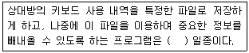
- 트로이 목마
- Honeypot
- BufferOverflow
- IDS
(정답률: 32%)
97. 다음 기사를 읽고 괄호 안에 들어가기에 가장 적당한 단어를 선택하시오.
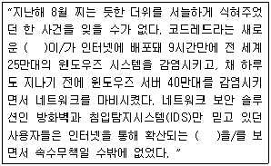
- 서비스 거부공격(Denial of Service)
- 웜(Worm)
- 버퍼 오버플로((Buffer Overflow)
- 트로이목마(Trojan Horse)
(정답률: 36%)
98. 다음 중 회사의 사설 네트워크와 외부의 공중 네트워크 사이에 중립지역으로서 삽입된 컴퓨터 호스트 또는 소형 네트워크를 말하는 것은?
- DMZ
- 트로이목마
- 파이어월
- 침입탐지시스템 (IDS)
(정답률: 46%)
99. 다음 지문에서 설명하고 있는 것은?
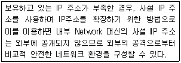
- NMS (Network Management System)
- NAT (Network Address Translation)
- NIDS (Network Intrusion Detection System)
- VPN (Virtual Private Network)
(정답률: 52%)
100. 해커를 유인하여 그들의 해킹 수법이나 행동방식 등을 연구하기 위한 서버로 해커의 접근 시 해커의 동작을 모니터링 하여 최신 해킹 기술이나 해커의 신분 등 각종 정보를 수집할 수 있는 서버의 이름은 무엇인가?
- VPN
- IDS
- Honeypot
- Firewall
(정답률: 46%)